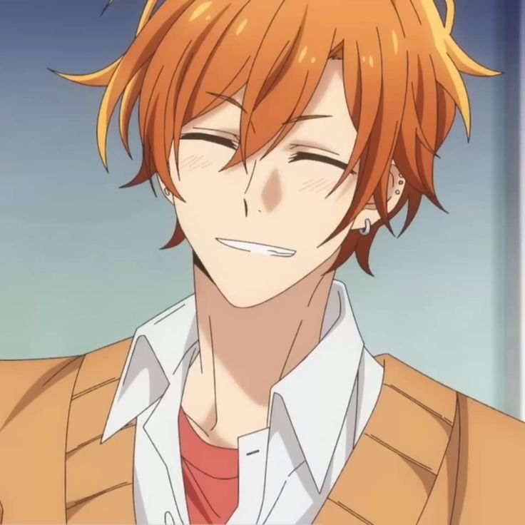
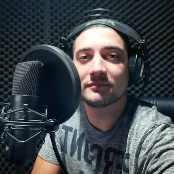

Nacionalidade:JaponêsData de nascimento: 18 de Janeiro de 1986Local de nascimento: Nagano,Japão Idade: 40 AnosTrabalhou tambem em:Blue LockWitch Crafts WorksVampire Dormitory
Nacionalidade:JaponêsData de nascimento: 18 de Janeiro de 1986Local de nascimento: Nagano,Japão Idade: 40 AnosTrabalhou tambem em:Blue LockWitch Crafts WorksVampire Dormitory
Sasaki Shūmei é um estudante do segundo ano do ensino médio conhecido por sua aparência de delinquente e sua personalidade extrovertida. Apesar da imagem intimidadora que transmite à primeira vista, ele é gentil, atencioso e demonstra grande preocupação com as pessoas de quem gosta. Após conhecer Miyano, passa a se interessar cada vez mais por ele, desenvolvendo sentimentos sinceros que o levam a amadurecer emocionalmente ao longo da história.
Jap: Yusuke ShiraiNacionalidade:JaponêsData de nascimento: 18 de Janeiro de 1986Local de nascimento: Nagano,Japão Idade: 40 AnosTrabalhou tambem em:Blue LockWitch Crafts WorksVampire Dormitory

Nacionalidade:BrasileiroData de nascimento: 25 de Agosto de 1989Local de nascimento: São Paulo,SPIdade: 36 AnosTrabalhou tambem em:Naruto ShippudenDemon SlayerDr. Stone